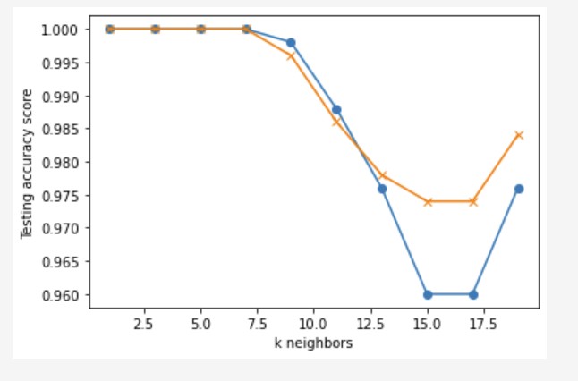
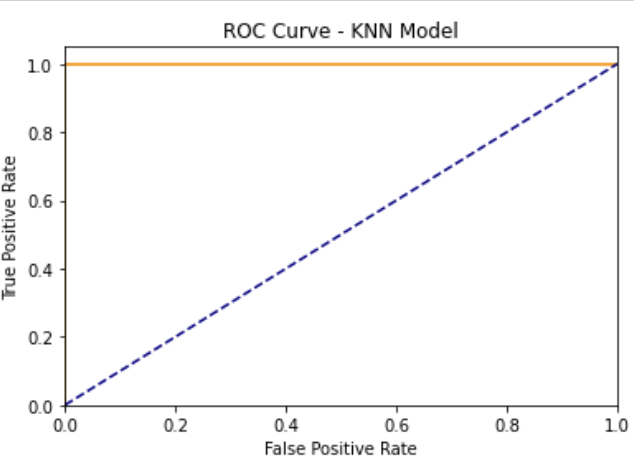

K-Nearest Neighbors, Support Vector Machine, Random Forest Classifier, and Neural Network.
This is the about paragraph.
We used KNN Classification to create the ROC Curve of the train and test models. The image to the left is the plot of the KNN models having two features; the low and the high. The second image is a plot of the AUC ROC Curve, and it is plotted with TPR (y-axis) against the FPR (x-axis). An AUC shown in this plot is running at a constant rate of 1.0 (TPR), which means it is an excellent model.
 
Here is where we put all the information about Support Vector Machine stuff.
Here is where we put all the information about Random Forest Classifier stuff.
Here is where we put all the information about Neural Network stuff.